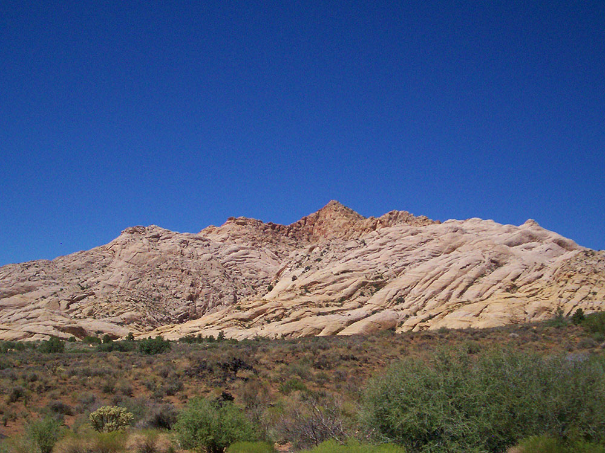
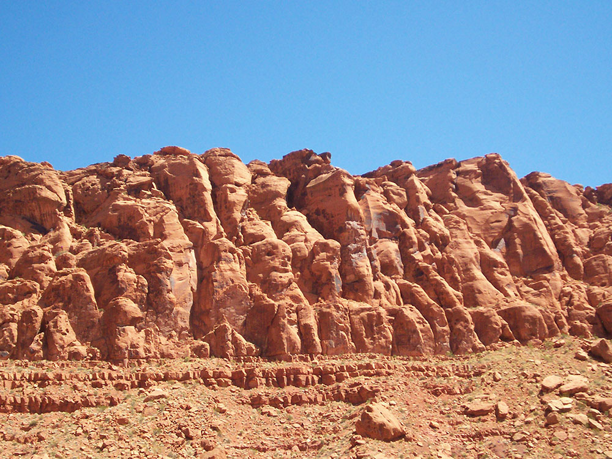
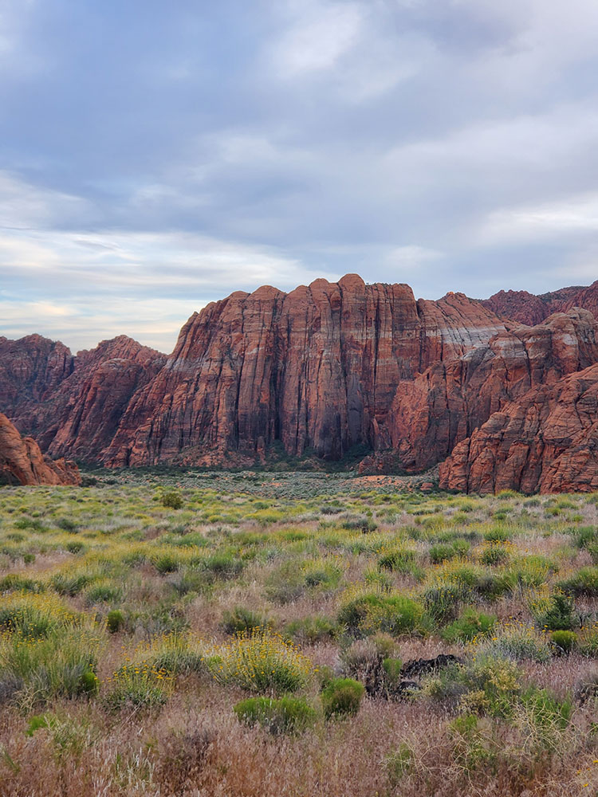
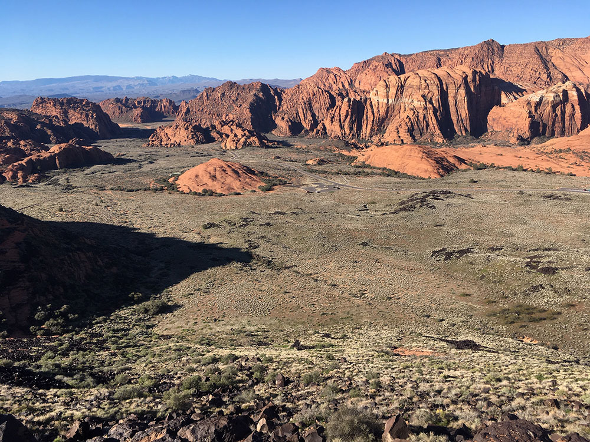

-400.jpg)
.jpg){kind=link}
Park featuring a canyon carved from the red and white Navajo sandstone of the Red Mountains, as well as the extinct Santa Clara Volcano, lava tubes, lava flows, and sand dunes
Seniors 65 and older (with UT driver's license): $5.00 per vehicle (up to eight people)
$5 pedestrian/cyclists (up to eight people)
Non-resident: $15.00 per vehicle (up to eight people)
$5.00 pedestrian/cyclist (up to 8 people)
How to Get There
From St George: Head south on S 700 E. Turn right at the 1st cross street onto E 700 S. Turn right onto Bluff St. Continue straight to stay on Bluff St. Slight right to stay on Bluff St. Keep right to continue on State Rd 18 N. Merge onto UT-18 N/Bluff St.
Overview
Snow Canyon State Park north of St. George is a Utah state park of about 7,400 acres, centered on a canyon carved from red and white Navajo sandstone with black lava flows from extinct volcanoes, sand dunes and lava tubes. The land was set aside as Dixie State Park in the late 1950s, opened to the public in 1962, and later renamed for Lorenzo and Erastus Snow, early Utah pioneer leaders, not for the weather. The park lies within the Red Cliffs Desert Reserve and is easy to reach, which has made it one of southwestern Utah's most popular outdoor destinations. Visitors come to hike more than 38 miles of trails, bike the paved Whiptail Trail, climb, camp and photograph the contrast of red cliffs, white sandstone and black lava.
Access
Snow Canyon State Park is on the northwest edge of Ivins, about 11 miles from St. George. The main entrance is on Snow Canyon Drive from Ivins to the south, and the road continues through the park to SR-18 on the north, so the park can be entered from either end. The road is paved and suitable for all vehicles, and the visitor center and campground lie roughly two miles inside either entrance. Parking at popular trailheads can fill on busy weekends in spring and fall. Pet rules are strict, so check the Utah State Parks website before bringing a dog.
Seasons
The park is open year-round, with the most comfortable hiking from fall through spring. Summers are extremely hot, with temperatures that can top 100 degrees Fahrenheit, so the park advises avoiding strenuous hiking and biking in the middle of the day. Winters are mild, and the red rock canyon is a favorite for winter hiking when nearby mountains are snowy, although nights can be cold. Some trails have seasonal restrictions to protect wildlife and visitors, including Johnson Canyon and Jenny's Canyon, so check posted closures with the park before you go. Occasional events can temporarily close Snow Canyon Drive and the Whiptail Trail.
Things to Do
Hike Among Red and White Sandstone
More than 38 miles of trails lead to lava tubes, sand dunes, slot canyons, a natural arch and viewpoints, from short interpretive walks to longer loops across slickrock.
Bike the Whiptail Trail
The paved Whiptail Trail follows the canyon bottom and is popular with cyclists, joggers and families, and Snow Canyon Drive is a favorite road-bike route.
Climb and Explore
Cliffs in the park attract rock climbers, and the lava tubes and flows, petroglyph sites and sand dunes make for interesting side trips. Horse trails and e-bike routes add to the choices.
Camp and Stargaze
The campground gives access to hiking at sunrise, and the park has been recognized as an Urban Night Sky Place for its views of the stars.
Top Trails
| Trail | Length | Difficulty | Highlights |
|---|---|---|---|
| Jenny's Canyon | 0.5 mile round trip | Easy | A short slot canyon |
| Lava Flow Trail | 2.5 miles round trip | Easy | A walk over black basalt to a lava tube |
| Sand Dunes | 1 mile | Easy | Fun for kids, and tracks in the sand |
Trails
Whiptail Trail - 6 miles (9.7 km). Easy. Level with some slopes. Accessible to physically challenged. Tucked along the canyon bottom, this sinuous paved trail is suitable for hiking, jogging, biking and rollerblading.
Johnson Canyon - (Open November 15 to March 1 only) - 2 miles (3.2 km). Easy. Level with some rocky slopes and steps. Boasting the only riparian area in the park, this trail winds through lava flows and red rock to an arch spanning 200 feet (61 m).
Jenny's Canyon - (Closed March 31 to June 1) - 0.5 miles (0.80 km). Easy, level with few slopes and steps. Trail leads to a narrow, sculpted canyon then splits with rock stairsteps to offer a scenic overlook.
Sand Dunes - 0.5 miles (0.80 km). Easy. Deep sand with some slopes. Trail leads to a large expanse of red sand that is an excellent play area for children of all ages.
West Canyon Road - 7 miles (11 km). Easy. Gravel and sand surface. Fairly level. Trail follows a maintenance road winding past washes and towering cliffs to the mouth of present-day Snow Canyon.
Pioneer Names - 0.5 miles (0.80 km). Easy. Fairly level with some steps and slopes. This crescent-shaped trail passes pioneer names written in axle grease, dating back to 1883.
Hidden Pinyon - 1.5 miles (2.4 km). Moderate. Rocky slopes. Drop-offs. This self-guided nature trail introduces geological features and native plants of the park.
Three Ponds - 3.5 miles (5.6 km). Moderate. Some rocky slopes. Deep sand. Trail winds through sandy washes to mouth of a 400-foot (120 m) canyon. Potholes eroded in sandstone catch seasonal rain, giving the trail its name.
Petrified Dunes Trail - 1-mile (1.6 km). Moderate. Some steep slopes, uneven surfaces. This trail crosses massive sandstone outcrops where you may explore sand dunes frozen in time.
Butterfly Trail - 2 miles (3.2 km). Moderate. Some steep slopes, steps and uneven surfaces. Winding along the west side of Petrified Dunes, this trail leads to West Canyon Overlook and lava tubes.
White Rocks Trail/Lava Flow Overlook - 4 miles (6.4 km). Moderate. Some rocky slopes, uneven surfaces. Passing through lava flows, juniper stands and views of West Canyon, trail leads to a natural amphitheater set in white sandstone. Or reach the amphitheater on a 1-mile (1.6 km) trail located one-half mile north of State Route 18 junction.
Visitor Centers
The park visitor center and bookstore are located in the campground area, about two miles inside either entrance on Snow Canyon Drive. Staff provide trail maps, information on seasonal trail closures and guided programs, and sell books and souvenirs. Hours vary by season, so check with the park, which can also be reached by phone, before you visit. Restrooms and water are available near the campground and main trailheads.
Camping and Lodging
The park has a year-round campground with tent and RV sites, including some sites with hookups, in a setting of red rock cliffs; reservations can be made online through Utah State Parks and are recommended, particularly in spring and fall. Backcountry camping is not permitted. Ivins is right next to the park, and St. George, about 11 miles away, has the area's widest choice of hotels, resorts and vacation rentals, along with restaurants and services. Santa Clara and Washington also have motels, and Hurricane, Springdale near Zion National Park and Cedar City are within about an hour or two.
This article uses material from the Wikipedia article "Snow Canyon State Park", which is released under the Creative Commons Attribution-Share-Alike License 3.0. Additional information from Utah State Parks.
Featured Locations

Dough4872, CC BY-SA 4.0, via Wikimedia Commons; Image Size Adjusted

Diamond Valley Cinder Cone
A short but steep volcanic hike spirals around loose cinders to a crater rim, offering sweeping panoramic views across lava fields, desert valleys, and surrounding mountains.
Dough4872, CC BY-SA 4.0, via Wikimedia Commons; Image Size Adjusted
Johnson Canyon Trail
Family-friendly desert canyon trail featuring lava rock terrain, shaded sandstone walls, a seasonal spring, and a massive natural rock arch.
Difficulty: Easy
Scenic canyon trail with waterfalls, cliffside walkways, and forest views
Dough4872, CC BY-SA 4.0, via Wikimedia Commons; Image Size Adjusted
Scout Cave
A desert hiking route crossing lava fields and sandstone terrain to reach a hidden cave set into red rock cliffs with panoramic canyon views.
Difficulty: Moderate
Desert trail crossing lava rock and sandstone leading to a hidden cliffside cave
Dough4872, CC BY-SA 4.0, via Wikimedia Commons; Image Size Adjusted
Snow Canyon Lava Tubes
A short desert trail across rugged lava fields leading to accessible underground tubes formed by ancient volcanic activity.
Difficulty: Easy to moderate
Easy hike over volcanic terrain leading to underground lava tube caves for exploration






